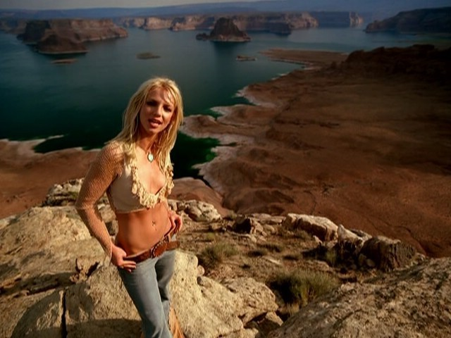

Mejores Temas
Perfume
Director: Joseph Kahn
Duración: 04:23
Lanzamiento: 10 de diciembre de 2013
Criminal
Director: Chris Marrs Piliero
Duración: 05:22
Lanzamiento: 18 de octubre de 2011
Peace of me
Director: Wayne Isham
Duración: 03:10
Lanzamiento: 14 Diciembre del 2007
Everytime
Director: David LaChappelle
Duración: 04:06
Lanzamiento: Marzo del 2004

I´m not a girl not yet a woman
Director: Wayne Isham
Duración: 3:51
Lanzamiento: Diciembre 2001
Lucky
Director: David Meyers
Duración: 4:12
Lanzamiento: Julio 2000
Oops I did it again
Director: Nigel Dick
Duración: 4:10
Lanzamiento: Marzo 2000
Sometimes
Director: Nigel Dick
Duración:3:51
Lanzamiento:Primeros de Abril de 1999
Baby one more time
Director: Nigel Dick
Duración: 3:57
Lanzamiento: 1 de Agosto de 1998